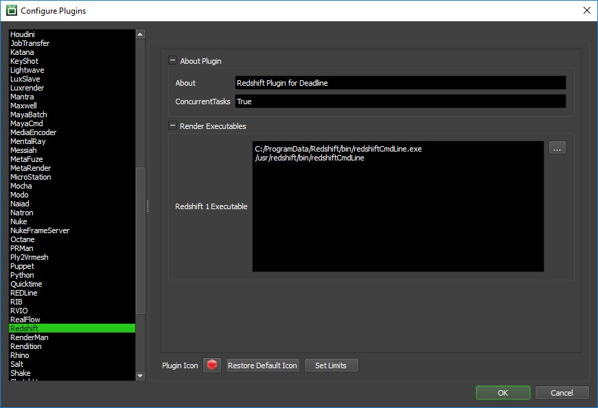

Redshift Standalone¶
Job Submission¶
You can submit Redshift Standalone jobs from the Monitor or via an in-app submitter such as MayaBatch as an export job.
Setup your rs Files¶
Before you can submit a Redshift Standalone job, you must export your scene into .rs files such as via the MayaBatch in-app submitter. Typically, one .rs file per frame is exported.
Submission Options¶
The general Deadline options are explained in the Job Submission documentation, and the Draft/Integration options are explained in the Draft and Integration documentation.
The Redshift specific options are:
Redshift File: The Redshift file(s) to be rendered. If you are submitting a sequence of .rs files, select one of the numbered frames in the sequence, and the frame range will automatically be detected.
Frame List: The list of frames to render. If you are submitting a sequence of .rs files, the frames you choose to render should correspond to the numbers in the .rs files.
Calculate Frames From Redshift File: If enabled, the frame list will be calculated based on the selected input file.
Render Options File: Optional. Overrides render options using a text file. The text file should contain pairs of options on each line. ie:
UnifiedMaxSamples 1500 UnifiedFilterSize 3.4
Image Output Directory: Optional. Overrides the image output directory. If left blank, Redshift will save the image output to the folder defined in the .rs file.
PBT Output Directory: Optional. Overrides the point-based technique output directory. If left blank, Redshift will save the point-based technique output to the folder defined in the .rs file.
Cache Directory: Optional. Overrides the cache path folder. If left blank, Redshift will output to the default cache path folder.
Texture Cache Budget (MB): Optional. Sets the texture cache size (in megabytes). If set to 0, will use the default texture cache budget.
GPUs Per Task: The number of GPUs to use per task. If set to 0, the default number of GPUs will be used.
Select GPU Devices: A comma separated list of the GPUs to use specified by the device id. ‘GPUs Per Task’ will be ignored. ie. ‘0’ or ‘1’ or ‘0,2’ or ‘0,3,4’ etc.
Version: The version of Redshift to render with.
Override Resolution: If enabled, the resolution defined within the Redshift scene will be overridden.
Plugin Configuration¶
You can configure the Redshift plugin settings from the Monitor. While in power user mode, select Tools -> Configure Plugins and select the Redshift plugin from the list on the left.
Render Executables
Redshift 1 Executable: The path to the Redshift v1 executable file used for rendering. Enter alternative paths on separate lines.
Cross-Platform Rendering Considerations¶
In order to perform cross-platform rendering with Redshift, you must setup Mapped Paths so that Deadline can set the Redshift environment variable REDSHIFT_PATHOVERRIDE_FILE. You can access the Mapped Paths Setup in the Monitor while in power user mode by selecting Tools -> Configure Repository. You’ll find the Mapped Paths Setup in the list on the left.
FAQ¶
Is Redshift Standalone supported?
Yes.
Does Redshift work with concurrent tasks?
Redshift does not support having multiple processes rendering on the same GPU at once. Due to this, Redshift may not work with concurrent tasks if GPUs per task is not also set.
Error Messages and Meanings¶
This is a collection of known Redshift error messages and their meanings, as well as possible solutions. We want to keep this list as up to date as possible, so if you run into an error message that isn’t listed here, please contact Deadline Support and let us know.
Currently, no error messages have been reported for this plugin.

{kind=link}
{kind=link}
{kind=link}